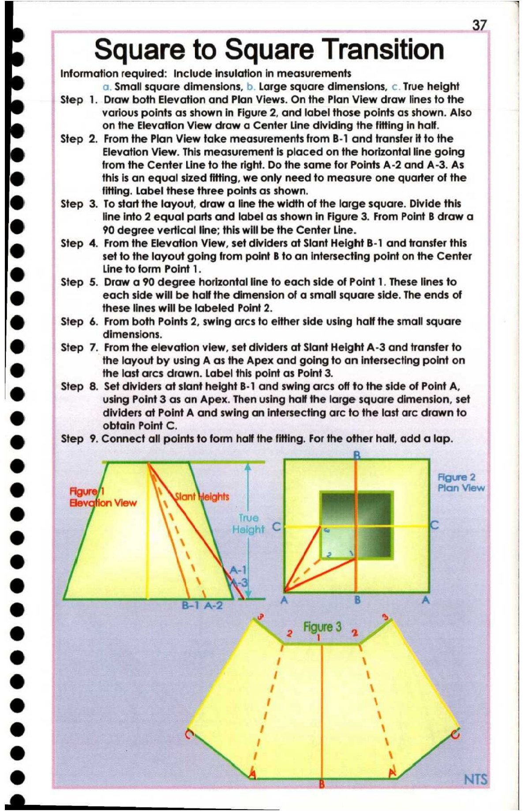

37. Square to Square Transition

37 |
Square to Square Transition |
Information required: Include insulation in measurements |
a. Small square dimensions, b. Large square dimensions, ¢. True height
Step 1. Draw both Elevation and Plan Views. On the Plan View draw lines to the
various points as shown in Figure 2, and label those points as shown. Also
on the Elevation View draw a Center Line dividing the fitting in half.
Step 2. From the Plan View take measurements from B-1 and transfer it to the
Elevation View. This measurement is placed on the horizontal line going
from the Center Line to the right. Do the same for Points A-2 and A-3. As
®@ this is an equal sized fitting, we only need to measure one quarter of the
fitting. Label these three points as shown.
e Step 3. To start the layout, draw a line the width of the large square. Divide this
line into 2 equal parts and label as shown in Figure 3. From Point B draw a
@ 90 degree vertical line; this will be the Center Line.
@ Step 4. From the Elevation View, set dividers at Slant Height B-1 and transfer this
set to the layout going from point B to an intersecting point on the Center
e Line to form Point 1.
Step 5. Draw a 90 degree horizontal line to each side of Point 1. These lines to
r ) each side will be half the dimension of a small square side. The ends of
these lines will be labeled Point 2.
@ Step 6. From both Points 2, swing arcs to either side using half the small square
dimensions.
© Step 7. From the elevation view, set dividers at Slant Height A-3 and transfer to
the layout by using A as the Apex and going to an intersecting point on
@ the last arcs drawn. Label this point as Point 3.
Step 8. Set dividers at slant height B-1 and swing arcs off to the side of Point A,
@ using Point 3 as an Apex. Then using half the large square dimension, set
@ dividers at Point A and swing an intersecting arc to the last arc drawn to
obtain Point C.
@ Step 9. Connect all points to form half the fitting. For the other half, add a lap.
iN | | Figure 2 |
@ gure @ d Plan View |
® \ Height SP fe _ |
° y= |
i.
@ \ Y g |
e To A B A
@ 2% 7
@
*
@
@ .,
e :
@ a. : NTS
ee ——